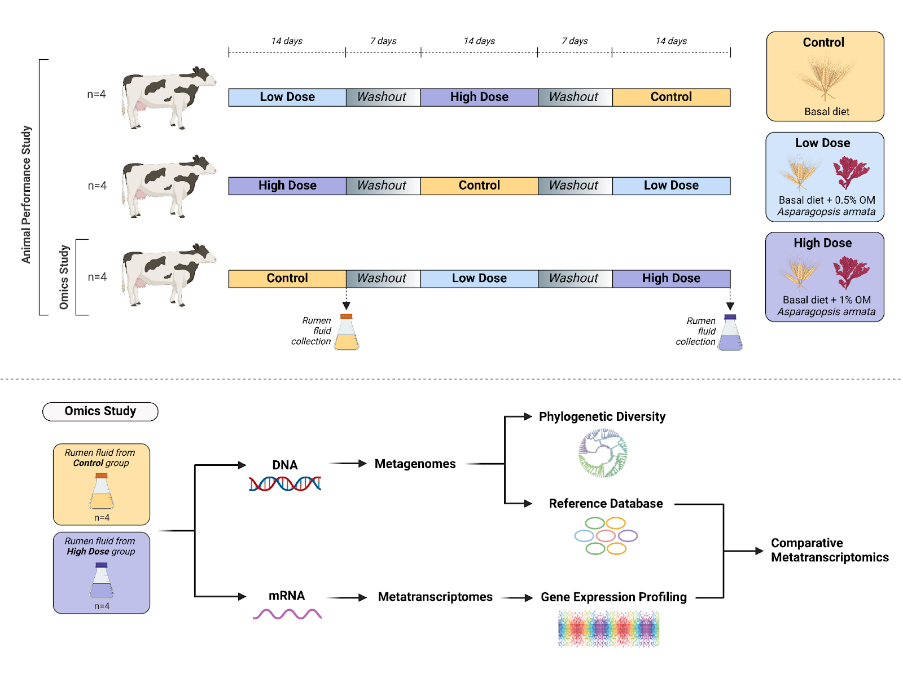
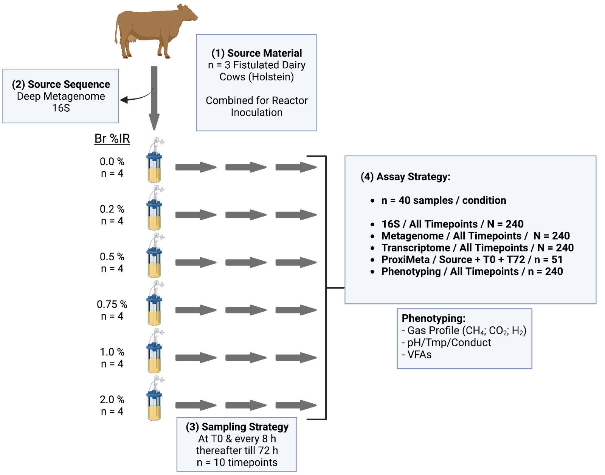

Rumen Microbiome
Overview
Methane is a potent greenhouse gas with 80 times the global warming potential of CO₂. Livestock methane emissions account for approximately 30% of anthropogenic methane production, with methanogens in the rumen serving as the primary producers across various animals. My research focuses on mitigating methane emissions from ruminants by 1) unraveling the ecological roles of individual rumen microbial species and 2) understanding how rumen microbes adapt to low- or zero-methane emission conditions. To address these questions, we have conducted both in vivo and in vitro experiments in collaboration with Matthias Hess and Ermias Kebreab at UC Davis, integrating bioinformatics to analyze microbial activity under natural and low-methane conditions. By synthesizing these insights, we aim to engineer the rumen microbiome to reduce methane emissions while preserving essential microbial fermentation processes that support animal health and growth.
Research Areas and Approaches
Research 1
In Vivo model system to study rumen microbiomes under low methane producing conditions
Red seaweed has been reported to efficiently reduce methane emissions from cows (Roque et al. 2019). By leveraging this finding, we are able to set up an In Vivo model system to study how rumen microbes adapt to the low-methane producing condition and find the alternative H2 sinks. In this experiment, cows are either supplemented with red seaweed as a feed additive or not. Metagenomes and metatranscriptomes of rumen microbiomes are obtained from the experimental cows. We are delighted to find a bacterium, Duodenibacillus Sp., that serves as an alternative H2 sink by incorporating H2 into the fumarate reduction pathway. The relevant work has been released on bioRxiv (Zhang et al. 2024).

Research 2
In Vitro model system to study rumen microbiomes under low methane producing conditions
To better understand the progress of rumen microbial adaptation to methane suppression, intensive longitudinal sampling of the rumen materials from animals is required, however, this can not be achieved in reality. Matthias Hess lab in UC Davis has set up the bioreactor system to incubate rumen materials (mostly rumen microbes) with the supplement of red seaweed and other chemicals known to suppress methane production. This system allows us to intensively sample rumen materials at different time points after treatment to study how rumen microbes progressively adapt to methane suppression.

Selected Publications
-
Zhang, P., Roque, B., Romero, P., Shapiro, N., Eloe-Fadrosh, E., Kebreab, E., Diamond, S.(1), Hess, M. (2025).
Red seaweed supplementation suppresses methanogenesis in the rumen, revealing potentially advantageous traits among hydrogenotrophic bacteria. Microbiome, 13, 231.
(https://doi.org/10.1186/s40168-025-01912-3)